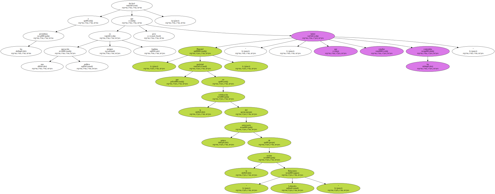
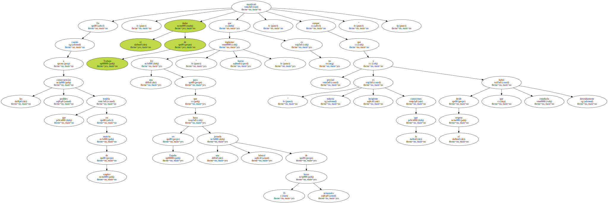
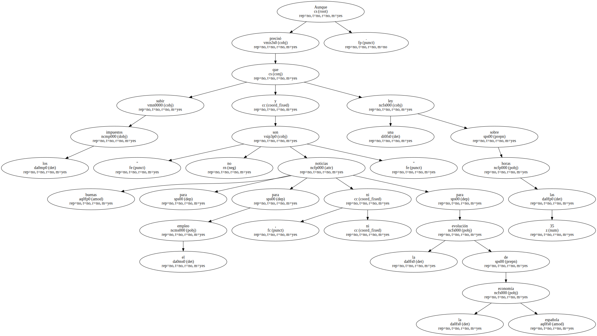
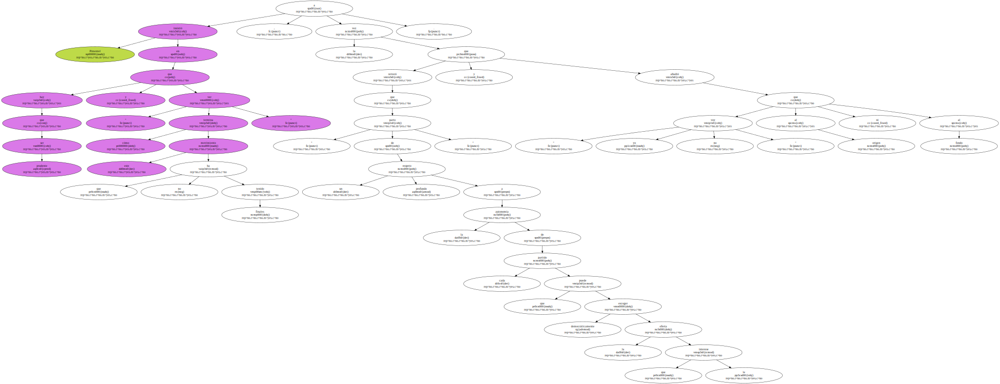

El ministro de Trabajo y Asuntos Sociales , Manuel Pimentel , opinó hoy que el posible pacto entre el PSOE e IU hay que verlo como " una operación política , que no me parece para mayor crítica ni halago sino que está en su libre autonomía y por tanto respeto democrático ".

Pimentel , que participó en la celebración del quince aniversario de la revista " Relaciones Laborales " , declaró a los periodistas que " una operación política siempre es legítima , pero habrá que estudiar los contenidos ".
En cuanto a las posibles consecuencias que tendría en materia de empleo , el titular de Trabajo manifestó que implantar una ley para que en España haya una jornada laboral de 35 horas semanales " no es bueno " , aunque precisó que " todavía es incipiente lo que conocemos y desde el respeto habrá que estudiarlo detenidamente ".
Aunque precisó que " subir los impuestos y una ley sobre las 35 horas no son buenas noticias para , ni para el empleo ni para la evolución de la economía " española.
Pimentel insistió en que " hay que ser prudente y ver cómo termina este movimiento que no ha tenido finales " , a la vez que reiteró que " parto de un respeto profundo a la autonomía de cada partido que democráticamente puede escoger la oferta que le interese " y añadió que " yo no voy al origen ni al fondo ".
